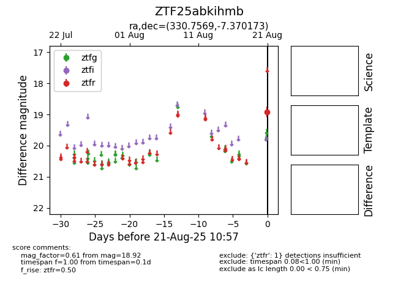

Target ZTF25abkihmb at 2025-08-21 10:57, see:
FINK: fink-portal.org/ZTF25abkihmb
Lasair: lasair-ztf.lsst.ac.uk/objects/ZTF25abkihmb
ALeRCE: alerce.online/object/ZTF25abkihmb
alt names
ZTF25abkihmb (ztf,alerce)
coordinates:
equatorial (ra, dec) = (330.7569,-7.37017)
galactic (l, b) = (51.3446,-45.50896)
photometry
last ztfr=18.92
1 ztfr detections
